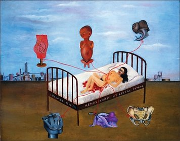

Henry Ford Hospital
Frida Kahlo · 1932 · Oil on metal · 30.5 × 38 cm · Museo Dolores Olmedo, Mexico City
In copyright. Look and learn: shown for study, not for download.
Kahlo was twenty-four and living in Detroit, where Edsel Ford had commissioned Diego Rivera's Detroit Industry murals, when she lost a pregnancy at Henry Ford Hospital in July 1932. She stayed in the hospital until 17 July. The doctors refused her medical illustrations, so Rivera brought her anatomy textbooks. She painted it in oil on metal, after the small votive retablos painted on metal sheets, and the factory on the horizon is Ford's River Rouge complex. Its first title was The Lost Desire.